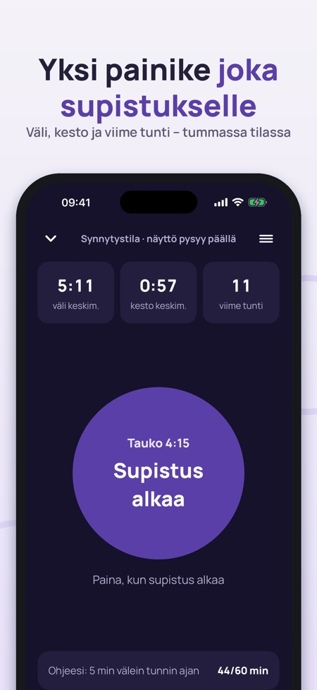
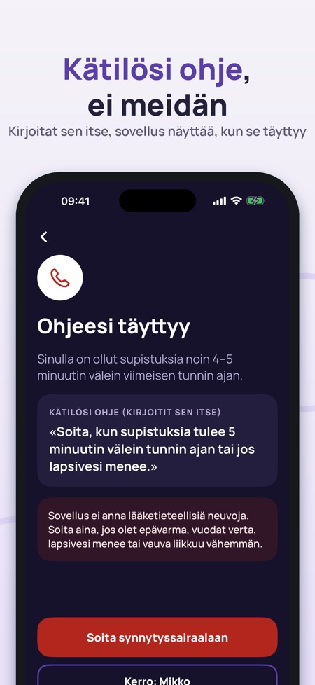
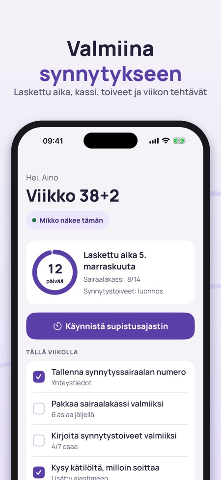

Supistuslaskuri, sairaalakassi. Supistusajastin yhdellä isolla painikkeella, kätilösi ohje, sairaalakassi ja toiveet – kumppani näkee saman iCloudin kautta. Sovellus kirjaa, se ei anna hoito-ohjeita.



Synnytysvalmis kokoaa synnytyspäivän tärkeimmät asiat: supistusajastin yhdellä isolla painikkeella, sairaalakassi, synnytystoiveet ja numerot, joihin soitat – ja kumppanisi näkee saman.
SUPISTUSAJASTIN (SYNNYTYSTILA)
• Yksi iso painike: paina, kun supistus alkaa ja kun se loppuu
• Supistusten väli ja kesto keskimäärin sekä supistukset viimeisen tunnin aikana
• Tumma näyttö pysyy päällä, isot numerot ja värinä jokaisella painalluksella
• Laskee oikein, vaikka puhelin lukittuu, sovellus suljetaan tai näyttö sammuu
• Lukitusnäyttö ja Dynamic Island näyttävät supistuksen tai tauon, ja painikkeella kirjaat seuraavan
• Historia kaaviona ja taulukkona – jaa tekstinä kätilölle tai kumppanille
KÄTILÖN OHJE
Kirjoita, mitä kätilö tai synnytyssairaala sanoi, esimerkiksi ”soita, kun supistuksia tulee 5 minuutin välein tunnin ajan”. Sovellus näyttää, kuinka pitkällä olet, ja korostaa, kun omat lukusi täyttyvät, sekä näyttää ison painikkeen synnytyssairaalaan soittamiseen. Sovellus ei ehdota lukuja eikä päätä, milloin lähdet.
SAIRAALAKASSI
• Valmis lista Suomeen: neuvolakortti ja henkilöllisyystodistus ylimpänä
• Kolme välilehteä: minä, vauva ja kumppani – lisää ja poista asioita
• Kumppani voi rastittaa omasta puhelimestaan
SYNNYTYSTOIVEET
• Seitsemän osaa: kivunlievitys, kuka on mukana, asennot, heti syntymän jälkeen, napanuora, ruokinta, kuvat ja tunnelma
• Valitse toiveet yhdellä painalluksella ja kirjoita omat muistiinpanot
• Tee suomenkielinen PDF tulostettavaksi tai näytettäväksi
KUMPPANI
Jako iCloudin kautta, ilman tiliä. Kumppani näkee supistusten tilan, sairaalakassin, toiveet ja yhteystiedot sekä tiedon ”päivitetty … sitten”, joten mikään ei näytä tuoreemmalta kuin on. Valitset itse, mitä jaetaan. Viesti ”Supistukset ovat alkaneet – tule kotiin” lähtee vain, kun painat.
YHTEYSTIEDOT
Isot painikkeet synnytyssairaalaan, neuvolaan, kumppanille ja taksiin. Kirjoitat numerot itse. Hätänumero 112 on aina alimpana.
VAUVAN LIIKKEET
Yksinkertainen päiväkirja ilman viitearvoja. Ylimpänä on aina neuvo ottaa yhteyttä synnytyssairaalaan, jos vauva ei liiku normaalisti.
ENSIMMÄISET VIIKOT
Viralliset vaiheet synnytyksen jälkeen Suomessa, Norjassa tai Tanskassa lähdelinkkeineen: äitiysavustus, neuvola, nimen ilmoittaminen, vanhempainraha, lapsilisä ja passi.
HINTA
Supistusajastinta, historiaa, sairaalakassia ja yhteystietoja voi käyttää ilman ostoa – myös synnytyspäivänä. Kumppanin kanssa jakaminen, synnytystoiveiden PDF, liikepäiväkirja, ensimmäiset viikot ja historian vienti avautuvat kertaostolla. Ei tilausta.
TÄRKEÄÄ
Synnytysvalmis kirjaa ja auttaa muistamaan. Sovellus ei anna lääketieteellisiä neuvoja eikä tee diagnooseja. Noudata kätilön ja synnytyssairaalan ohjeita ja soita heille, jos olet epävarma. Tekstien lähteet on linkitetty: terveyskylä.fi, kela.fi, helsenorge.no ja sundhed.dk.
Tietosuoja: kirjoittamasi tiedot tallentuvat puhelimeen ja, jos jaat, omaan iCloudiisi. Nimettömät käyttötilastot (mitä näyttöjä käytetään, ei koskaan terveystietoja) voi kytkeä pois asetuksista.